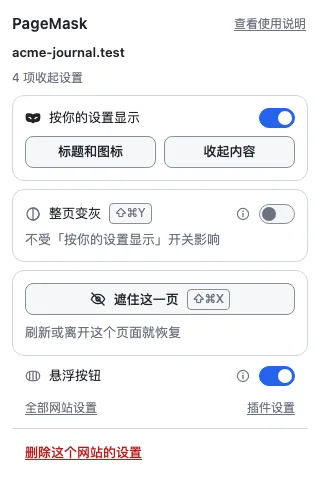
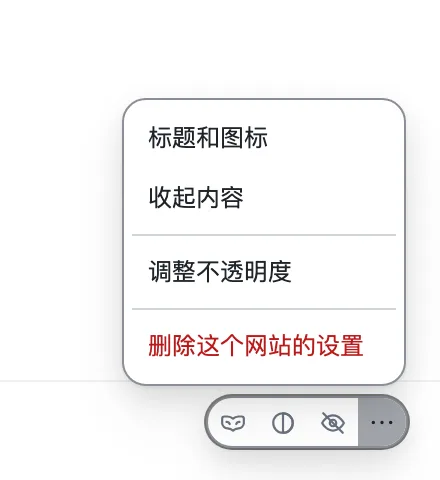

PageMask
收起网页上不想看的部分——在你主动添加的网站上，点选元素把它们收起来；标签页的标题和图标也能一起变低调。不用学任何代码，鼠标点选就行。 Hide the parts of a page you don't want. On sites you add yourself, click the elements and they're gone — and the tab title and icon go low-key too. Nothing to learn: point, click, done.
数据只存在你的浏览器里：没有账号、没有遥测、不上传任何东西。 Your data stays in your browser: no account, no telemetry, nothing gets uploaded.
实际界面The actual interface
下面是扩展在一个虚构示例网站上的真实截图，不是效果图：点选、弹窗、悬浮按钮和整页变灰。点开任意一张，可以在新标签页看大图。 Real screenshots — not mockups — from the extension on a fictional demo site: picking, the popup, the floating button and turning the whole page gray. Click any of them to open the full-size image in a new tab.



功能Features
收起的内容Hidden items
在网页上点选不想看的部分——推广位、推荐流、侧栏、页脚都可以。三种收起方式：「消失」让下面的内容往上顶，「留空」看不见但位置还占着，「盖住」不改动网站自身的样式，任何网站都可用。选中一次，整个网站都照它办；可以逐条删除，删错 5 秒内可撤销。 Pick the parts of a page you don't want — promos, feeds, sidebars, footers. Three ways to hide: "Disappear" moves the content below up, "Keep space" leaves the slot empty, "Cover" works on any site without touching the site's own styles. One pick covers the whole site; delete items one by one, and a deletion can be undone within 5 seconds.
标签页标题和图标Tab title & icon
把标签页标题换成「阅读」这样的低调字样；图标可以保留网站原来的、也可以不显示，或者换成内置的十种图标之一。网站自己改标题时，会被自动改回来。 Turn the tab title into something low-key like "Reading". Keep the site's own icon, show no icon at all, or pick one of the ten built-in icons. If the site rewrites its title, PageMask changes it back automatically.
整页变灰Turn the whole page gray
一个开关，让整个页面变成黑白——文字、图片、视频、背景图全都一样，位置不变、链接照常点、文字照样读。声音完全不参与，音量仍在播放器自己的按钮里。 One switch turns the entire page black & white — text, pictures, videos and background images alike. Everything keeps its place, links still work and text stays readable. Sound is not touched: volume stays with the player's own button.
遮住这一页Cover this page
一键遮住整页，连这个标签页的声音一起按住；刷新或离开页面就自动还原。遮住后页面上只剩一颗「恢复」小按钮，点一下就回到刚才的样子。 One click covers the whole page and holds that tab's sound as well; reloading or leaving the page restores everything. A small "Restore" button stays on the page — click it to go back to what you were doing.
怎么用How it works
-
把 PageMask 固定到工具栏：点浏览器右上角的拼图图标，再点 PageMask 旁边的图钉。 Pin PageMask to the toolbar: click the puzzle-piece icon at the top of Chrome, then the pin next to PageMask.
-
在要设置的网站上打开 PageMask 弹窗。第一次会先请你「允许访问」这个网站——这是 Chrome 在问，只问这一次。 Open the PageMask popup on the site you want to set up. The first time, Chrome asks you to "Allow access" for that site — it asks only once.
-
点「收起内容」，在页面上点选要收起的元素，看一眼效果再保存。之后这个网站的页面上会有一颗悬浮按钮：点一下按你的设置显示，再点一下回到原样。 Click "Hide items", pick the elements on the page, check the result and save. From then on the page has a floating button: one click shows your settings, another click goes back to the site as it is.
安装 PageMaskInstall PageMask
PageMask 正在申请上架 Chrome 应用商店，审核通过后这里会换成商店安装链接。当前可以先从 GitHub Releases 下载 zip 手动安装，需要 Chrome 116 或更高版本。 PageMask is under review for the Chrome Web Store; once it is listed, this section will link to the store. For now, download the zip from GitHub Releases and install it manually — Chrome 116 or later is required.
- 在 GitHub Releases 页面下载最新的 zip，解压到一个你会一直保留的文件夹。 On GitHub Releases, download the latest zip and unzip it into a folder you will keep.
- 打开 Chrome，在地址栏输入 chrome://extensions，打开右上角的「开发者模式」。 Open chrome://extensions in Chrome and turn on Developer mode (top right).
- 点「加载已解压的扩展程序」，选择刚解压出来的文件夹。 Click Load unpacked and select the unzipped folder.
以后换新版本时，把新文件覆盖到同一个文件夹，再在 chrome://extensions 点这个扩展卡片上的刷新按钮——不要点「移除」，也不要换文件夹，否则已有的设置会清空。这是 Chrome 对所有未打包扩展的行为，不是 PageMask 的毛病。 When a new version comes out, overwrite the same folder and click the reload button on the extension card in chrome://extensions. Don't click "Remove" and don't switch folders — either wipes your settings. This is how Chrome treats every unpacked extension, not something specific to PageMask.
隐私Privacy
PageMask 没有服务器，也没有账号。下面四条是它的工作方式，完整说明见隐私政策。 PageMask has no server and no account. These four points are how it works; the full policy has the details.
不联网No network
PageMask 自身不发起任何网络请求：没有统计、没有广告、没有第三方代码。 PageMask makes no network requests of its own — no analytics, no ads, no third-party code.
数据只在本机Data stays on this device
设置只存在浏览器的本地存储（chrome.storage.local）里，卸载 PageMask 就全部消失。 Settings live only in your browser's local storage (chrome.storage.local); uninstalling PageMask removes all of them.
按站点逐个允许访问Access, one site at a time
安装时不请求任何网站的权限。只有你在某个网站上点了「允许访问」，PageMask 才会在那个网站上工作；临时功能（如「遮住这一页」）只在你点开的那一刻起作用，不留权限。没添加的网站什么都不做。 No site permissions are requested at install time. PageMask works on a site only after you click "Allow access" there; temporary actions (like "Cover this page") apply only at the moment you use them and leave no permission behind. Nothing is done on sites you haven't added.
随身带走Take your settings with you
全部网站设置可以导出成一个文件，在另一台电脑上导入。 All site settings export as one file; import it on another computer.
常见问题Frequently asked questions
会影响我没设置的网站吗？ Will it affect sites I haven't set up?
不会。不添加任何网站，PageMask 不会向任何页面注入脚本、样式或界面。「遮住这一页」「整页变灰」这类按钮也一样：在你主动点下并允许之前，它对页面什么都不做。 No. Until you add a site, PageMask injects no script, no style and no UI into any page. Buttons like "Cover this page" and "Whole-page gray" work the same way: nothing happens to a page until you click and allow it.
需要注册账号吗？ Do I need an account?
不需要。没有账号，也没有登录；设置就保存在你这台电脑的浏览器里。 No. There is no account and no sign-in. Your settings live in the browser on this computer.
设置能换电脑吗？ Can I move my settings to another computer?
可以。把全部设置导出成一个文件，在另一台电脑上导入就行。 Yes. Export all your settings as one file and import it on the other computer.
收起的东西还能找回来吗？ Can I get hidden items back?
可以。在设置里逐条删除，删错 5 秒内可撤销；也可以用「恢复网站原来的内容」一次全恢复。 Yes. Delete items one by one in the settings — a deletion can be undone within 5 seconds — or use "Use the site's own content" to restore everything at once.